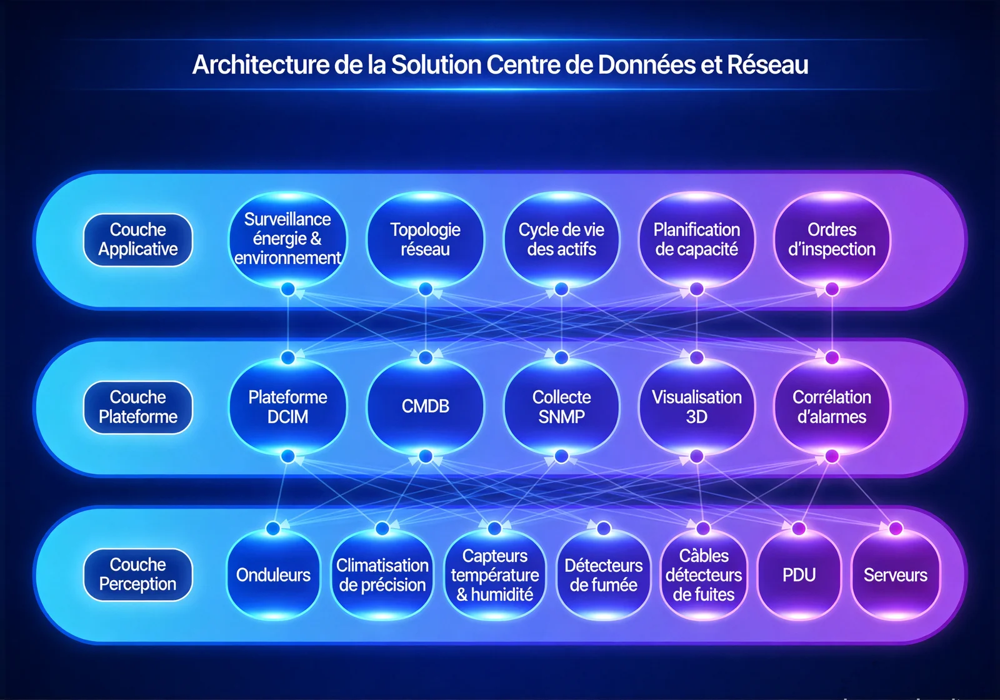

Pour les entreprises africaines locales et les institutions chinoises, des services de bout en bout d'infrastructure de salle serveurs et de conception d'architecture réseau qui répondent aux points de douleur clés que sont les faibles standards de construction, l'architecture réseau vieillissante et la gestion d'exploitation dispersée, bâtissant un socle IT hautement disponible, sécurisé et évolutif.
Vue d'ensemble
Fournit aux entreprises africaines locales et aux institutions chinoises des services de bout en bout d'infrastructure de datacenter et de conception d'architecture réseau, répondant aux faibles standards de construction, à l'architecture vieillissante et à la gestion dispersée, et bâtissant un environnement IT hautement disponible, sécurisé et évolutif.
Applicable à : Datacenters d'entreprise, réseaux de bureaux, réseaux de campus, interconnexion d'agences.
- Conception modulaire à extension élastique
- Architecture redondante pour la haute disponibilité
- Plateforme d'exploitation unifiée réduisant la complexité
- Conforme aux normes TIA-942 et ISO27001
Bénéfices : Disponibilité accrue de l'infrastructure IT, coûts de personnel d'exploitation réduits, continuité d'activité renforcée.
Défis Métier
Parmi les entreprises et institutions opérant en Afrique, les clients font souvent face à des standards de construction faibles, des architectures réseau vieillissantes et des défenses de sécurité incomplètes ; ils ont besoin d'un environnement TI hautement disponible, conforme aux normes internationales et exploité de façon unifiée.
Standards de construction faibles
Alimentation instable, température et hygrométrie mal maîtrisées, mesures incendie insuffisantes : les serveurs vivent sous la menace d'une panne permanente.
Architecture réseau vieillissante
Des couches cœur/agrégation/access mal conçues créent des goulots d'étranglement et bloquent l'extension.
Défenses de sécurité faibles
L'absence de pare-feu et de détection d'intrusion laisse les données exposées au risque de fuite.
Un diagnostic lent qui pèse sur l'activité
Des systèmes gérés en silos localisent lentement les pannes faute de vue unifiée ; le risque pour la continuité d'activité croît avec l'échelle.
Conformité aux normes internationales
Le centre de données et la sécurité doivent être conçus selon TIA-942 et ISO27001.
Visibilité opérationnelle unifiée
Une plateforme unique doit suivre en temps réel l'environnement de la salle, le trafic réseau et l'état des serveurs.
Scénarios typiques :
Rôles concernés : Directeurs TI, ingénieurs réseau, ingénieurs d'exploitation, administrateurs sécurité.
Architecture
Conçue sur une architecture en quatre couches « infrastructure – réseau – sécurité – exploitation » couvrant l'énergie et l'environnement de salle, le réseau à trois niveaux, la défense en profondeur et l'exploitation unifiée, avec déploiement intégré des serveurs, du stockage, de la virtualisation et de la reprise après sinistre.

La couche infrastructure sécurise l'énergie, le refroidissement et l'environnement physique ; la couche réseau porte le trafic sur un schéma à trois niveaux ; la couche sécurité construit une défense en profondeur ; la couche exploitation supervise salle, trafic et serveurs en un point unique.
Modules clés
Infrastructure de salle
ASI, climatisation de précision, groupes électrogènes et PDU de baie forment un environnement énergétique hautement disponible.
Réseau à trois niveaux
Conception en couches cœur/agrégation/access avec SDN pour une orchestration automatisée.
Défense en profondeur
Pare-feu, détection d'intrusion, analyse de vulnérabilités et bastions à chaque niveau.
Supervision unifiée
Un tableau de bord visualise en temps réel l'état de l'environnement, du trafic et des serveurs.
Déploiement intégré
Clusters de serveurs, baies de stockage, virtualisation et PRA planifiés d'ensemble.
Capacités d'intégration :
- Déploiement intégré des clusters de serveurs, du stockage, de la virtualisation et de la reprise après sinistre
- Supervision des performances réseau avec alertes automatiques
- Suivi du cycle de vie complet des actifs TI
Avantages et livraison
Avec une conception modulaire et redondante alignée sur les normes internationales, nous livrons des prestations complètes qui relèvent la disponibilité et la sécurité du SI, via l'implantation et la conception du centre de données, le câblage structuré, le durcissement de la sécurité et le déploiement de la plateforme d'exploitation.
Avantages différenciants
Normes internationales
Conçu et validé selon TIA-942 et ISO 27001 : conformité garantie et risque réglementaire faible.
Extension modulaire
Extension par phases selon la croissance, protégeant l'investissement et évitant la surconstruction.
Architecture redondante haute disponibilité
Alimentation, refroidissement et liens réseau redondants : une défaillance isolée n'interrompt pas l'activité.
Plateforme d'exploitation unifiée
Un écran unique pour l'environnement, le trafic réseau et l'état des serveurs.
Sécurité en profondeur
Pare-feux, IDS et bastion forment une défense multicouche.
Déploiement intégré
Clusters, stockage, virtualisation et PRA planifiés ensemble, réduisant le risque d'intégration.
Processus de mise en œuvre
Étude des besoins
Recenser la taille de l'activité, les objectifs de disponibilité et les exigences de conformité.
Implantation et conception
Conception de la salle et de l'environnement électrique selon TIA-942.
Câblage structuré
Câblage structuré et chemin de câbles réalisés.
Installation des équipements
Baies, onduleurs, climatisation, équipements réseau et de sécurité.
Configuration réseau
Architecture trois niveaux et orchestration SDN mises en service.
Durcissement sécurité
Politiques de pare-feu, IDS et bastion déployés.
Plateforme d'exploitation et formation
Écran d'exploitation mis en ligne et personnel formé avant remise.
Garantie de service
Valeur client
Disponibilité IT accrue, coûts d'exploitation réduits et continuité renforcée : une base solide pour la transformation numérique.